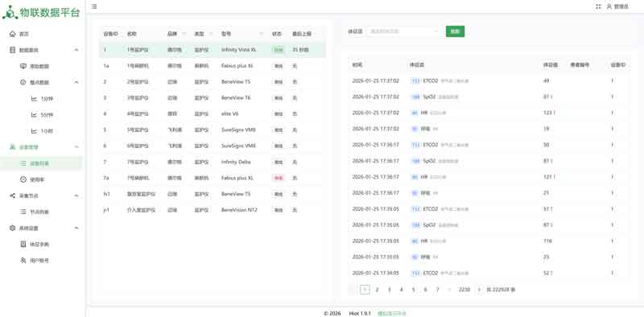
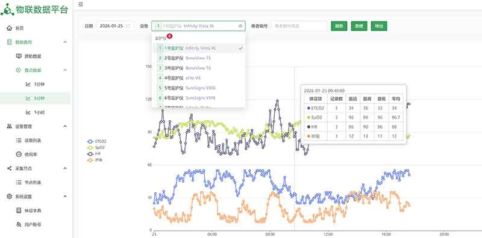
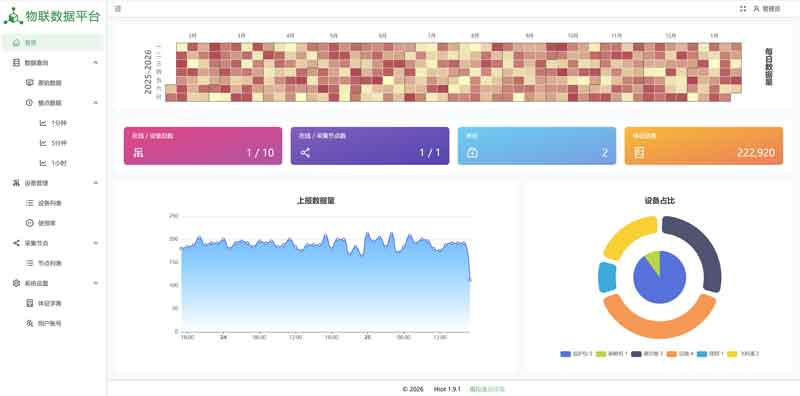

设备状态监控
查看设备在线状态、IP 地址、连接时间和最近采集时间。
通过界面截图了解设备接入、状态监控、数据查询与系统运维的核心流程。
以下演示基于现有页面资源展示，真实项目可按医院网络与设备环境调整。

查看设备在线状态、IP 地址、连接时间和最近采集时间。

展示各床旁设备持续上传的生命体征数值，便于运维快速定位异常。

维护设备、体征项和标准编码映射，降低后续设备扩展成本。
可演示设备连接状态、体征数据查询、整点数据输出、excel数据导出、运维界面的核心能力。